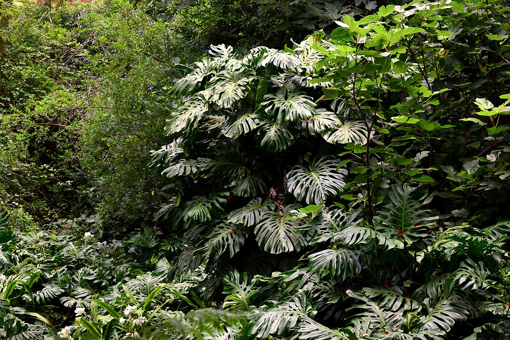
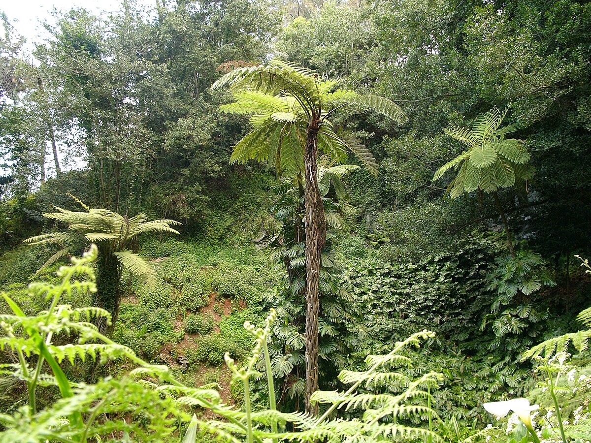

Few plants have captured the global imagination quite like Monstera deliciosa. Its distinctive split and fenestrated leaves have become one of the most recognisable symbols in modern design — appearing in interiors, fashion, and art around the world. Thailand is a premier producer of export-quality Monstera for the global market.
The Monstera story is remarkable. Before the 2010s, it was a moderately popular houseplant. Then social media happened. Designers, lifestyle influencers, and interior photographers discovered that Monstera leaves — with their dramatic holes and natural sculptural quality — photographed beautifully. Within a few years, Monstera imagery was everywhere: wallpapers, textiles, ceramics, logos, and luxury hotel lobbies.
The global demand for Monstera plants surged. Rare cultivars (like the variegated Monstera thai constellation, originally a laboratory mutation from Thailand) became collector's items commanding prices in the thousands of dollars per cutting. Even common Monstera deliciosa saw unprecedented demand for well-grown, large-leaf specimens.

The Monstera's iconic holes and splits (technically called fenestrations) are not random — they are an evolutionary adaptation. In the wild, Monstera grows in the shadowy understory of tropical rainforests, climbing trees toward the light. The holes in mature leaves allow sunlight and rain to pass through to lower leaves and the root zone, while the splits make the large leaves more resistant to wind damage.
Young Monstera plants produce whole, uncut leaves. As the plant matures, the holes and splits become progressively more elaborate — a sign of a healthy, well-established specimen. This developmental progression is part of what makes Monstera so interesting to grow and observe.
Monstera is among the most forgiving and adaptable plants for indoor use, which is a big part of its popularity. It tolerates a wide range of light conditions and is resilient to some neglect.
While Monstera is primarily used as an indoor plant in most of the world, in tropical climates it thrives outdoors as a garden accent or covered terrace plant. In Thailand, mature outdoor Monstera specimens can produce leaves over 90cm wide with elaborate fenestrations that indoor plants rarely achieve.
For interior designers and hospitality projects, large statement Monstera plants — placed in architectural pots in hotel lobbies, restaurant interiors, or spa waiting areas — create immediate visual impact with minimal ongoing maintenance. Thailand-grown specimens arrive well-acclimated to indoor conditions and adapt quickly to new environments.
Thailand has become one of the world's most important producers and exporters of Monstera plants. A warm, humid climate, low production costs, experienced growers, and established export infrastructure give Thai nurseries a significant advantage. The famous "Monstera thai constellation" — a variegated cultivar developed in Thailand — originated from Thai tissue culture laboratories and commands extraordinary prices globally.
Thai Terra Gardens sources Monstera from specialist growers across Thailand, offering standard Monstera deliciosa in various sizes as well as select rare and variegated cultivars for premium buyers. We handle full export documentation and can advise on phytosanitary requirements for your destination country.
Whether you need standard specimens or rare cultivars, our team can help. Contact us for pricing and availability.
Get in Touch →